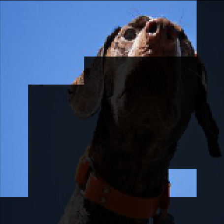
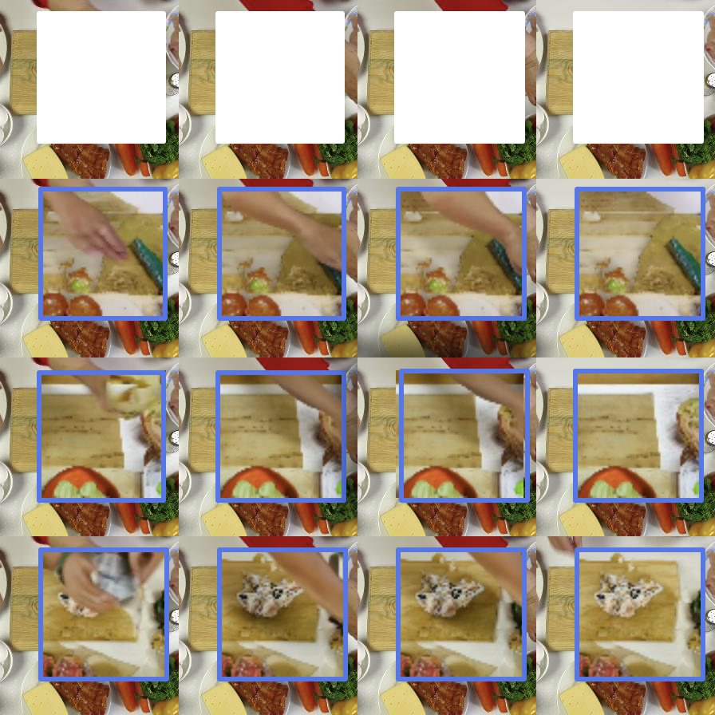
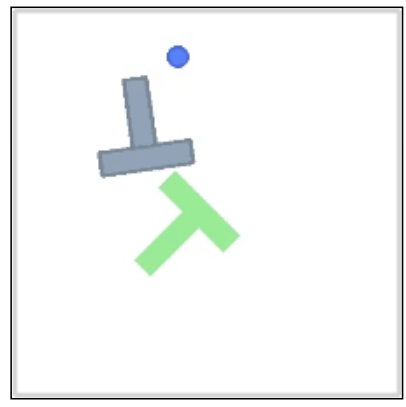
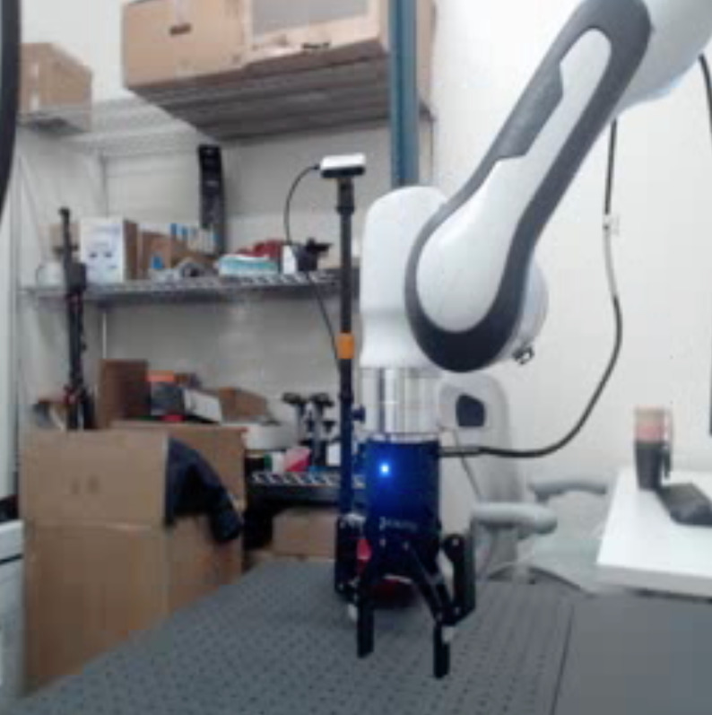
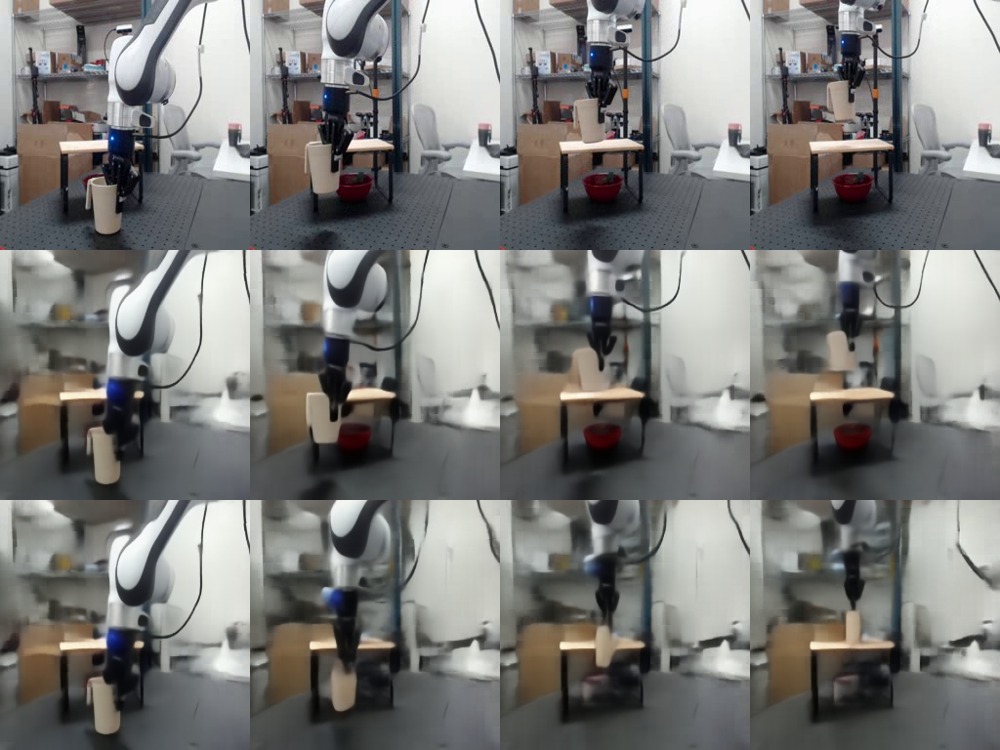

世界模型 · 第 2 期 · 2022 → 2025
JEPA
LeCun 立场文 → I-JEPA → V-JEPA → DINO-WM → V-JEPA 2-AC：在表征空间预测，不生成像素
可lip





00这条线
五篇论文，三年
重点讲第一篇的思想和最后一篇的做法，中间三篇讲它们各自证明了什么
2022-06
LeCun 立场文
六模块架构 + JEPA
62 页，没有实验
2023-01
I-JEPA
图像
预测表征，不预测像素
2024-02
V-JEPA
视频
挖掉 90% 的时空块
2024-11
DINO-WM
冻结特征 + 小预测器
仿真里规划
2025-06
V-JEPA 2-AC
100 万小时视频预训练
真机零样本抓放
2026-03
LeWorldModel
从像素端到端训
以后再讲
JEPA
Joint-Embedding Predictive Architecture
联合嵌入 · 预测 · 架构 · LeCun 2022 立场文 §4
01LeCun 2022 · JEPA · 表征 ≈ 摘要
生成式画下一帧，JEPA 只预测下一帧的摘要
把动作交给预测器，s[t+1] = Pred(s[t], a[t])，在摘要里往前滚、做规划，就是世界模型 · ①②④ 防坍缩
02I-JEPA · 2023-01 · Assran 等 · Meta · CVPR 2023
I-JEPA：看图的一块，预测另外四块的摘要
02I-JEPA · 挖法 · 预测器可视化
目标是几块大区域，预测的是语义不是纹理
multi-block 54.2 · 单个大块 20.2 · 随机散点 17.6（1% 标签） · 目标换成像素：66.9 → 40.7 · 右：预测器输出解码成图，姿态对，位置和细节不定
03V-JEPA · 2024-02 · Bardes 等 · Meta
V-JEPA：挖掉的块在时间上贯穿整段，其余照旧
03V-JEPA · mask 消融 · Table 4 · 同一个 ViT-L，同样数据
只看过去猜未来，表征反而更差
冻结编码器 + attentive probe · Top-1
| mask 策略 | K400 | SSv2 | IN1K |
|---|
| random-tube · 随机散点，挖 90% | 51.5 | 46.4 | 55.6 |
| causal[6] · 只看前 6 帧，预测后面 | 61.3 | 49.8 | 66.9 |
| causal[12] · 只看前 12 帧，预测后面 | 71.9 | 63.6 | 72.2 |
| multi-block · 整段里挖块，双向补全 | 72.9 | 67.4 | 72.8 |
目标换成像素：K400 73.7 → 68.6 · 预训练只学补全，预测未来留给有动作的阶段
04DINO-WM · 2024-11 · Zhou 等 · NYU · ICML 2025 · 和第 4 页同一个形状，两处不同
DINO-WM：编码器冻结，z 换成真实动作
04DINO-WM · 实验设定
六个仿真环境，任务都是「到达一张目标图」
上：Maze · Reacher · Wall 下：PushT · Rope · Granular（仿真 XArm） · 只用离线随机轨迹训练 · CEM 搜动作，100 条 × 10 轮，一次 53 秒
04DINO-WM · Table 1 / Table 2 · 成功率
PushT：0.30 → 0.90；换成全局向量掉回 0.44
同一份离线数据、无 reward · 都用 MPC
| 方法 | Maze | Wall | Reach | PushT |
|---|
| IRIS | 0.74 | 0.04 | 0.18 | 0.32 |
| DreamerV3 | 1.00 | 1.00 | 0.64 | 0.30 |
| TD-MPC2 | 0.00 | 0.00 | 0.00 | 0.00 |
| DINO-WM | 0.98 | 0.96 | 0.92 | 0.90 |
同一个预测器 · 只换编码器
| 编码器 | Wall | Reach | PushT |
|---|
| ResNet-18 · 全局向量 | 0.12 | 0.06 | 0.20 |
| R3M · 全局向量 | 0.34 | 0.40 | 0.42 |
| DINO CLS · 全局向量 | 0.58 | 0.60 | 0.44 |
| DINO patch · 196 格 | 0.96 | 0.92 | 0.90 |
去掉因果掩码：0.92 → 0.08 · 重建损失回传给预测器：0.92 → 0.80 · 全部仿真，没有真机
05V-JEPA 2 · 2025-06 · Meta FAIR · Assran, Bardes, Fan, Garrido 等 · 整体架构
1B 的视频编码器，加 300M 的动作条件预测器
左 V-JEPA 2：编码器，阶段一训，之后冻结 · 右 V-JEPA 2-AC：预测器，条件从 mask 位置换成动作和末端状态，阶段二训
05V-JEPA 2 · 训练方式
两阶段：视频训编码器，机器人数据训预测器
阶段一：100 万小时视频，不用动作，只学「视频的摘要」 · 阶段二：62 小时机器人视频，冻结编码器，只学「动作怎么改变摘要」
05V-JEPA 2 · 阶段一 · 六个分类任务平均
阶段一：配方不变，规模放大，84.2 → 88.2
2M → 22M 段视频 +1.0 · 300M → 1B +1.5 · 90K → 252K 步 +0.8 · 256 → 384，16 → 64 帧 · 渐进分辨率省 8.4 倍 GPU 时间
05V-JEPA 2-AC · 阶段二 · 论文图 4
阶段二：冻结编码器，只训预测器，两项损失
紫色格子 = 每帧过冻结编码器得到的 z · 左：每一步都用真实的历史，猜下一帧，和真实的比 · 右：把自己猜的喂回去再猜一步 · 两项相加，只更新预测器
05V-JEPA 2-AC · 阶段二 · 一次训练步，一步一步看
阶段二：看到现在的摘要和动作，猜下一帧的摘要
J 下一步 · K 上一步
1
数据4 帧画面，每帧一个末端状态 s；相邻两帧状态的差，就是这一步的动作 a。没有任务标签、没有奖励
2
编码冻结的编码器把每一帧变成一张格子图 z。它是阶段一训好的，这里一点不动
3
猜下一帧预测器看 z1、s1 和动作 a1，猜帧 2 的格子 ẑ2，和真实的 z2 比 L1
4
三步一起猜帧 2、3 也各猜下一帧；历史永远给真实的格子，三个预测一次算完
5
接自己的锅把自己猜的 ẑ2 顶替 z2 当输入，再猜帧 3，也和真实的比。推理时它只能这样连着猜
6
只更新预测器两项 L1 相加反传；梯度到预测器为止，编码器纹丝不动
05V-JEPA 2-AC · 规划 · 式 (5)
能量 = ‖预测的表征 − 目标图的表征‖₁，CEM 搜动作
800 条动作 × 10 轮，留 top-10 更新高斯，取均值 · horizon = 1，只执行第一个动作再重规划 · 每步位移 ≤ 13 cm · 单张 RTX 4090，16 秒一个动作
05V-JEPA 2-AC · 单目标 reach · Fig 8 / Fig 9
能量地形平滑、局部凸，最低点在真实动作附近
左：真实动作 (Δx, Δy) = (0, −0.1)，能量最低点在 (0, −0.05) 附近 · 右：三个方向都能到 4 cm 以内，误差单调下降 · 从无标注视频里学出来的视觉伺服
05V-JEPA 2-AC · Table 2 · 两个实验室均值 · 每项 10 次
零样本抓放：80%，Octo 15%
Franka + Robotiq 夹爪 · 未标定单目 RGB · 同一份权重和代码
| 方法 | Reach | 抓杯子 | 抓盒子 | 持杯 reach | 持盒 reach | 抓放杯子 | 抓放盒子 |
|---|
| Octo · BC | 100% | 15% | 0% | 15% | 70% | 15% | 10% |
| V-JEPA 2-AC | 100% | 65% | 25% | 75% | 75% | 80% | 65% |
Octo：OXE 100 万+ 轨迹预训练，再用全量 Droid + 目标图做行为克隆微调 · V-JEPA 2-AC：2.3 万条 Droid 轨迹，成功失败都用
05V-JEPA 2-AC · Pick-and-place · Fig 10
三张子目标图：抓住 → 靠近放置点 → 放好
4 / 10 / 4 步固定切换子目标 · 两个实验室，不同物体位置和杂乱背景
05V-JEPA 2-AC · Table 3 · vs Cosmos-Predict1 7B · Lab 2 · 单张 RTX 4090
像素世界模型 4 分钟一个动作，表征世界模型 16 秒
CEM · 10 轮 · horizon 1 · Cosmos 在 Droid 上做动作条件微调
| 方法 | 样本数 | 每个动作 | Reach | 抓杯子 | 抓盒子 | 抓放杯子 | 抓放盒子 |
|---|
| Cosmos 7B · 视频扩散 | 80 | 4 min | 80% | 0% | 20% | 0% | 0% |
| V-JEPA 2-AC | 800 | 16 s | 100% | 60% | 20% | 80% | 50% |
Cosmos 一次抓放超过 1 小时 · 因为太慢只能用 80 个样本，比较并不完全公平
05V-JEPA 2-AC · 附录 · 单独训一个帧解码器，只用于可视化
机械臂动，背景不动；末帧杯子位置偏低
左三行：真实轨迹 / 编码器重建 / 只给第一帧 + 真实动作的 rollout · 右：同一串动作，夹爪闭合杯子跟着走，张开杯子不动 · 解码器不参与训练和规划
06局限
局限
作者自己说的
对相机位置敏感：没有标定，动作坐标轴要从单目画面里猜；实验相机位置是手动试出来的，35° → 85° 误差随角度线性增长，平均 1.6 cm
长程规划不行：误差累积 + 搜索空间指数增长，抓放必须人给子目标图
只支持图像目标，语言进不来
我读出来的
16 秒一个动作 + 阻塞控制，离实时差两个数量级
预测器是确定性 L1 回归，一个动作只给一个未来；立场文里的潜变量 z 没有用上
每项只 10 次；盒子抓取 20–30%；能量算的是整幅特征图的距离，目标图必须来自同一相机
07小结 · 后来谁在用它
JEPA 留下的东西：一个好用的编码器
| 工作 | 时间 | JEPA 在里面是什么零件 | 结果 |
|---|
| V-JEPA 2 + Llama 3.1 8B | 2025-06 | 冻结的编码器当大语言模型的视觉输入，做视频问答 | 8B 档多个 benchmark 最好，编码器没见过语言 |
| JEPA-VLA · 清华 | 2026-02 | V-JEPA 2 直接换掉 VLA 的视觉骨干（替 SigLIP / DINO） | LIBERO 96.4 |
| VLA-JEPA · 中科大等 | 2026-02 | 冻结 V-JEPA 2 给「未来帧表征」当预测目标，未来帧不进 VLM | 无标注人类视频也能预训练；LIBERO 97.2，LIBERO-Plus +10 |
| LDA-1B | 2026-02 | 在 DINO 表征空间里学动力学，视觉专家 + 动作专家 | DINO-WM 那条路放大到 1B |
| LeWorldModel · LeCun 组 | 2026-03 | 不冻结、不用 EMA，SIGReg 正则从像素端到端训 JEPA 世界模型 | 15M 参数，单卡几小时，规划比 DINO-WM 快 48 倍 |
| V-JEPA 2.1 · Meta | 2026-03 | 改预训练配方，学稠密、时间一致的特征 | 真机抓取 +20 左右 |
2022-06
LeCun 立场文
六模块 · JEPA
Mode-1 / Mode-2
2023-01
I-JEPA
表征目标 > 像素目标
EMA 防坍缩
2024-02
V-JEPA
tube mask
学到运动
2024-11
DINO-WM
冻结特征 + 小预测器
够规划
2025-06
V-JEPA 2-AC
1B 编码器 + 300M 预测器
真机零样本
这条线不变的东西：在表征空间预测 · 编码器冻结，只训预测器 · 目标是一张图，动作是搜出来的 · 不要奖励，成功失败都能用
下期：世界模型 · 第 3 期